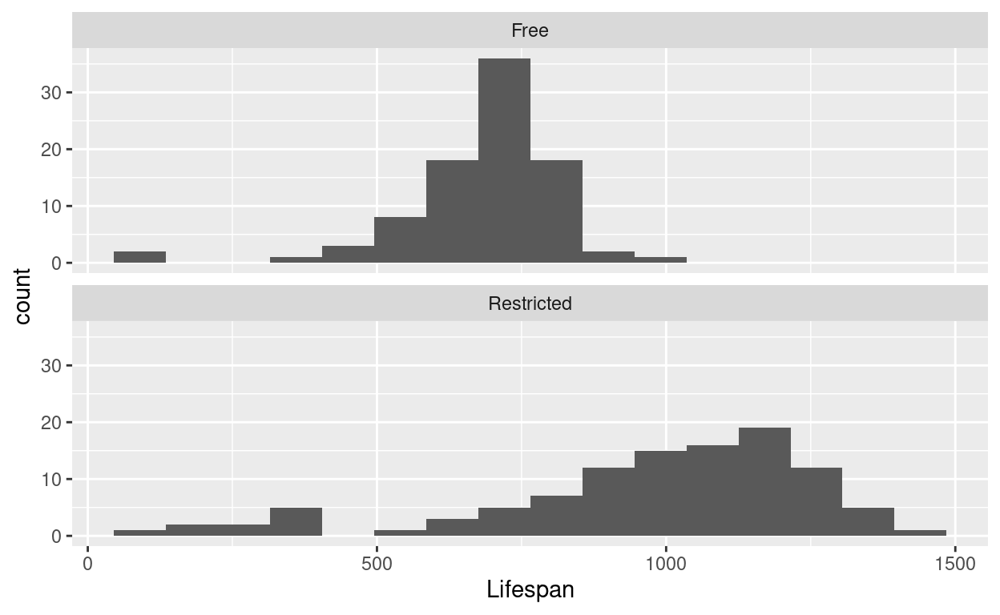

Introduction
This session is divided into two parts. In the first, we will use R to understand how two measures of variability work: the standard deviation and its close cousin, the variance. We will see how valuable the computer can be to quickly produce both numerical and visual summaries of data.
But while computers are great at mindless computation, that means us people have to be better at mindful stuff. We need to think about what these numbers mean and why they may be important for understanding the world.
In the second part of the session we will analyze data from an experiment. We will use both visual and numerical summaries to help draw conclusions about what was going on in the experiment.
Variance and standard deviation
Two important and widely-used numerical summaries of variability are variance and standard deviation. Although they have two different names, they are really two ways of looking at the same thing. The standard deviation is more often used as a summary of variability, although we shall see that variance is useful for other purposes later in this course.
These summaries involve a somewhat long chain of calculations. It is important to see this chain to understand what these numbers are telling us. In this part of the session, we will use R to find the variance and standard deviation of some simple simulated data. First, we will follow that long chain. Then, we will see how to find these summaries more quickly and efficiently.
The big picture
A good numerical summary of variability should tell us how much we would expect the observed values of a variable to differ from what is “typical”. This is what “standard deviation” means: it is a summary of the typical (“standard”) amount by which observed values of some variable tend to differ (“deviate”) from their central tendency. The variance and standard deviation are based on using the mean to describe central tendency.
Check out the data
To see how the variance and standard deviation are calculated, let’s
create a very small fake data set, which we will creatively call
my_data. It contains 5 observations of a single variable
called “X”.
my_dataAlthough these data are not real, they are similar to what one might observe in a random sample of IQ scores (which have a mean of 100 and standard deviation of 15 in the typical population).
We will now follow the chain of calculations, step by step, that results in finding the variance and then the standard deviation of a set of observed values like we have for the “X” variable in our simulated data.
Step 1: Find the mean
First, we find the mean of the observed values. As we’ve seen, R can
be used as a fancy calculator. So we could find the mean of the observed
values on the X variable by plugging the values into the
formula for the mean that we’ve already learned:
(91 + 102 + 107 + 109 + 111) / 5## [1] 104While using R as a calculator has its advantages over doing it by hand, the downside is that we still have to type/copy those numbers. Moreover, if we wanted to use the result for something else (which we will), we’d have to copy that too, and the more we do this, the greater the chances are that we make a mistake.
Rather than typing in the numbers manually, we can instead use R’s
mean function within the “summarize” line:
my_data %>%
summarize(mean(X))Exercise 1
When we’ve used the “summarize” function in previous sessions, we
always preceded it with a group_by line. Say in your own
words why we didn’t use a group_by line to find the mean in
the chunk of code we just ran.
Step 2: Find the deviations from the mean
The next step is to find, for each observed value in our data, its deviation from the mean. In mathematical notation, the deviation for the \(i\)th observation can be written as \((x_i - \bar{x})\) where \(x_i\) is a shorthand for the \(i\)th observed value and \(\bar{x}\) is the mean.
In previous sessions, we’ve used the mutate line to
transform counts into proportions. Now we will use it to find the
deviations:
my_data %>%
mutate(deviation = X - mean(X))Step 3: Square the deviations
Now that we’ve found the deviations, we square each of them, again
using a mutate line:
my_data %>%
mutate(deviation = X - mean(X)) %>%
mutate(squared_deviation = deviation^2)Note that, in R, the caret symbol ^ is used for
exponentiation.
Step 4: Add up the squared deviations
Now, we add up the squared deviations using the sum
function as part of a summarize line:
my_data %>%
mutate(deviation = X - mean(X)) %>%
mutate(squared_deviation = deviation^2) %>%
summarize(sum_squared_deviation = sum(squared_deviation))Exercise 2
Modify the chunk of code we just ran to just add up the
deviations instead of the squared_deviations.
(Hint: think about what variable name to put inside the
parentheses after “sum” on the last line.)
my_data %>%
mutate(deviation = X - mean(X)) %>%
mutate(squared_deviation = deviation^2) %>%
summarize(sum_deviation = sum(___))- What is the sum of the deviations?
- How do you think the sum of the deviations might relate to the idea that the mean is the “balance point” of a distribution of numbers?
Step 5: Divide by \(n - 1\) to get the variance
The variance is the sum of squared deviations
divided by \(n - 1\), where \(n\) is the number of observed values, the
“sample size”. To get \(n\), we can
include n = n() in the summarize line and then
use another mutate line to get the variance:
my_data %>%
mutate(deviation = X - mean(X)) %>%
mutate(squared_deviation = deviation^2) %>%
summarize(sum_squared_deviation = sum(squared_deviation), n = n()) %>%
mutate(variance = sum_squared_deviation / (n - 1))Step 6: Take the square root to get the standard deviation
Finally, we get the standard deviation by taking the
square root of the variance, which we do with a final
mutate line. In R, the sqrt function stands
for square root.
my_data %>%
mutate(deviation = X - mean(X)) %>%
mutate(squared_deviation = deviation^2) %>%
summarize(sum_squared_deviation = sum(squared_deviation), n = n()) %>%
mutate(variance = sum_squared_deviation / (n - 1)) %>%
mutate(standard_deviation = sqrt(variance))All steps at once
We just saw the complete chain of calculations involved in finding
the variance and then the standard deviation. But as you might have
guessed from the fact that R has a mean function, it also
has functions that directly calculate variances and standard deviations.
These functions are called var and sd,
respectively, and we can use them in a summary line, like
so:
my_data %>%
summarize(mean = mean(X), variance = var(X), standard_deviation = sd(X))The code we just ran is much more compact, readable, and less liable
to lead to any typos, so naturally we will use the built-in
var and sd functions pretty often!
Exercise 3
Take a look at how we used the mutate and
summarize lines when we were calculating the variance and
standard deviation step-by-step. In your own words, describe a basic
difference between what a mutate line is used for and what
a summarize line is used for.
Hint: Think about the result we got after adding either a
mutate or summarize line and how it affected
the number of rows and/or columns in the result.
Diet and Lifespan
Having seen how to use R to calculate numerical summaries of central tendency and variability, let’s see how they operate in real data. The data we will be looking at come from a study by Byung Pal Yu and their colleagues. They studied the lifespan of a sample of rats which were randomly assigned to one of two different diets: One group of rats was allowed to eat freely, however they wanted; another group was fed on a restricted diet with only about 60% of the calories that the free-eating rats had.
Check out the data
The data from this study are stored under the name
rats.
head(rats)As you can see, there are just two variables in this dataset, Diet and Lifespan (measured in days). Diet is the explanatory variable and Lifespan is the response variable.
Histograms
Although numerical summaries like the mean, variance, and standard deviation are important, they should always be accompanied by visual summaries in order to get a more complete understanding of the data.
Let’s make a facetted histogram that shows the distribution of
lifespans of the rats under each diet. We will use an option under
facet_wrap that lets us set the number of
columns (ncol) so we can see the facets
stacked atop one another.
rats %>%
ggplot(aes(x=Lifespan)) +
geom_histogram(binwidth=90) +
facet_wrap("Diet", ncol = 1)
Exercise 4
First, let’s describe what we can see from the histograms (you may also try out other bin widths for the histograms as you like).
- Describe the shape of the two distributions. Be sure to note the number of modes, any skewness, and whether there may be any outliers in either group.
- Compare the two distributions. Be sure to note whether there seem to be any differences in central tendency or variability between the two groups.
Boxplots
We’ve also seen some examples of boxplots as useful
visual summaries of data. The “box” of the boxplot encloses the
“inter-quartile range” (IQR), that is, the middle 50% of the data that
falls between the 25th and 75th percentiles. The line in the middle of
the box shows where the median is. Boxplots are easy to produce in R by
using geom_boxplot instead of
geom_histogram:
rats %>%
ggplot(aes(x=Lifespan, y=Diet)) +
geom_boxplot()
Exercise 5
Compare the boxplots and histograms we just made.
- What sorts of things seem easier to do with the boxplots as opposed to histograms? Think about what features of the data might be easier to see with a boxplot and what comparisons might be easier to make using a boxplot.
- Do you lose anything by using a boxplot instead of a histogram? Are there any important features of the data that are harder to see in the boxplot?
Summarizing the data numerically
Finally, let’s use R to get a numerical summary of the lifespans of the rats under the two diets. In the first part of the session, we focused on the mean and standard deviation (and variance), but we have also seen that the median and inter-quartile range (IQR) can also be used as numerical summaries of central tendency and variability.
R can find the median and IQR for us:
rats %>%
group_by(Diet) %>%
summarize(Median = median(Lifespan), IQR = IQR(Lifespan))Exercise 6
Fill in the blanks in the following chunk of code to find the mean and standard deviation of the lifespans of the rats under each diet. Hint: recall the names of the functions we used to find these quantities earlier.
___ %>%
group_by(___) %>%
___(Mean = ___, SD = ___)Compare the means and standard deviations for each group of rats to the histograms we made earlier. How are the differences in mean lifespan between groups reflected in the two histograms? How are the differences in the standard deviation of lifespan reflected in the two histograms?
These numerical summaries of central tendency and variability provide a concise description of the lifespans of rats under the two different diets. These descriptions help us address the research question: does a restricted diet have an effect on lifespan?
Exercise 7
Based on the visual and numerical summaries we have made, let us draw some conclusions about that research question.
- Briefly describe the differences in lifespans between rats under a restricted diet versus rats with a free diet.
- Based on the design of the study, can we conclude that the differences in diet may have played a role in causing the observed differences in lifespan in this sample? Why or why not?
- What is the population to which you think we could generalize these results?
Wrap-up
In this session, we saw how to find two important numerical summaries of variability: variance and standard deviation. We analyzed data from an experiment studying the relationship between diet and lifespan in a sample of rats, using both visual and numerical summaries to get a more complete picture of the relationships between explanatory and response variables.